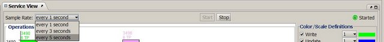

Section Summary: Provides graphical representation of space operations performed and average throughput.
Overview
The Statistics view provides graphical representation of space operations performed and average throughput.

Operations Statistics Status
The Operations Statistics Status area displays the total number of operations performed in the space. The Legend on the right side, apart from color indication, provides a check box for every opertion, allowing you to remove it from the graph.
TP Statistics History
The bottom left side graph is displayed depending on the selected option:
- TP [Operations/Sec] History – displays throughput performance (operations per second).
- Total Operations Count History – displays the space operations' history. The graph represents the number of operations performed since you began working with the space.
Additional options:
- Clear button – clears the graph.
- The Graph Scaling area in the bottom right provides a check box for every operation, allowing you to remove it from the graph.
Refresh Options
You can choose to refresh the statistics display periodically. When auto refresh is running, a green blinking dot is displayed on the right side of the screen. Select the desired refresh rate from the drop-down menu. To stop the statistics automatic refresh, click the Stop button.
 Auto-refresh activity impacts server performance, so you might want to stop it when running benchmarks.
Auto-refresh activity impacts server performance, so you might want to stop it when running benchmarks.
